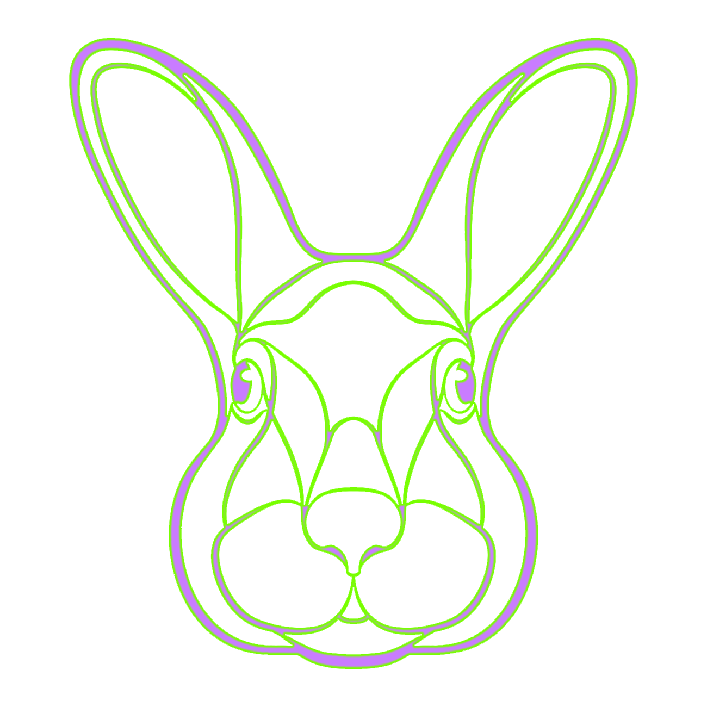
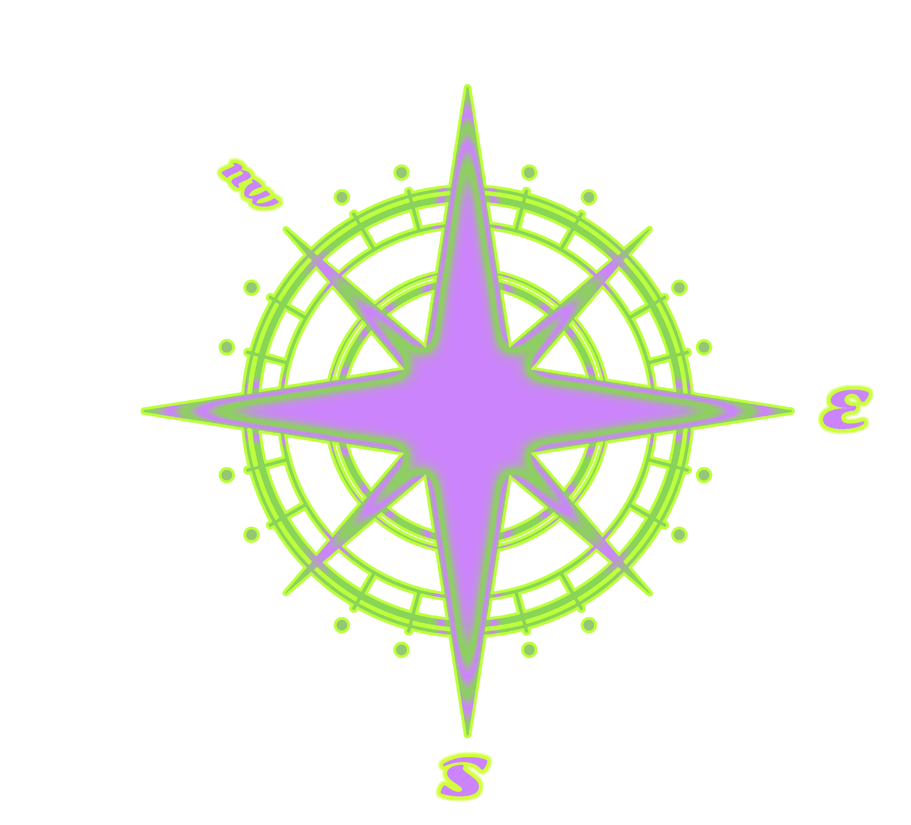
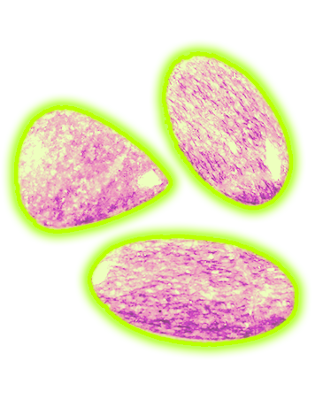

Everything will go very well this month. Work will be satisfying. Relationships will improve, but some misunderstandings may arise. These should be clarified in time.
Rabbits' career luck will not improve this month, so they are not advised to do business or make investments on a large scale. Their luck financially will also not improve, so they should be careful in case they lose money.
They should avoid snobs and watch their words. Much attention should be paid to their health.
Luck will be on the rise for Rabbits. They will not need to worry about health. They should, however, take care if they go out at night. Rabbits with babies should eliminate unhealthy food, to avoid stomach upsets.
Rabbits will be out of luck this month. They may get stuck in their careers. It will not be a good time for making decisions. They should take care of their own health this month.
In relationships, Rabbits won't be able to make any improvements. Single Rabbits will only rarely have opportunities to meet the right one. So, they will hardly be able to make any breakthrough in love.
With luck improving this month, Rabbits will be busy at work, and rewarded according to their performance. With finances, there will be wins and losses, so they need to be prudent.
Rabbits should take care when involved in outdoor activities. In relationships, there will be some problems. An unexpected intruder may step in and spoil their formerly good relationships.
July will be a lucky month for Rabbits. With the help of benefactors, they will rebound financially. They may not yet gain satisfaction on the relationship front, but they should relax, and not be too anxious.
There will be some damage to property, so Rabbits will need to be prudent when investing or trading. They should be alert in case their money is stolen.
They will have nothing to worry about in regard to health. When they dine out, they should choose a safe and sound restaurant.
Rabbits will make great progress in their careers. There will be a pleasant surprise this month, but Rabbits should not be too greedy, or their good luck is likely to be damaged. It will not be advisable to make adventurous investments on stocks or shares.
Out of luck this month, Rabbits should be prudent in everything. In their careers, they will experience a lot of hardship. As for finance, they will make little profit due to decreased luck. They will be vulnerable to accident this month, so should take care. They should not go to dangerous places.
Little changes for the better will filter into their lives this month. With both good luck on finance and precious opportunities in their careers, they will gain a lot if they manage the situation carefully. They will have unexpected income mid-month.
Rabbits will not make any progress in relationships. They will have nothing to worry about in their health, but should never eat in excess. As for relationships, Rabbits should eschew extra-marital affairs, which are harmful to jobs and family.
Rabbits' luck decreases again this month, but their financial luck remains stable. Though tough, if Rabbits deal with their problems properly, they will be rewarded in abundance. They will be vulnerable to some crises and conflicts, but will have nothing to worry about in health.
Luck will return to Rabbits. With an auspicious star shining on them, their careers and finances will come back on track. They will make financial profits, gain promotion in their jobs, and make progress in their relationships.
In the Pig year of 2019, anyone born in a year of the Rabbit is forecast to have a prosperous life, better than just plain old sailing.
In the Pig year of 2019, anyone born in a year of the Rabbit is forecast to have a prosperous life, better than just plain old sailing.
In the Pig year of 2019, anyone born in a year of the Rabbit is forecast to have a prosperous life, better than just plain old sailing.
In the Pig year of 2019, anyone born in a year of the Rabbit is forecast to have a prosperous life, better than just plain old sailing.
H
ow to make your
life choices
Career
There will be unbelievable good luck for white-collar Rabbit workers who struggle in their jobs. Rabbits with professional skills and some specialized knowledge will be offered promotion and much experience will be accumulated.
If there is any juggling of jobs in the company, Rabbits will be well qualified and hopeful of seizing the opportunity to obtain promotion.
Health
Generally, Rabbits will enjoy decent health this year. They will participate in more outdoor activities. It will be advisable for them to join in physical exercise with family and friends, helping to enhance their own good health. At the same time, the people around them will get involved in sport.
Wealth
With good luck financially, Rabbits will earn a lot on their investments. If with the help of benefactors they seize new opportunities to develop, they will be rewarded with both money and luck. There will be unexpected income this year for Rabbits.
Love
In their love lives, neither male nor female Rabbits will see much improvement. Chances of meeting the right one will be rare for them.
They should slow down. It takes time. A marriage is hard to achieve, but they still aspire to love at first sight. Single Rabbits should remain patient and seize whatever few opportunities arise during this period.



F
eng shui
A system of laws considered to govern spatial arrangement
and orientation in relation to the flow of energy (Chi),
and whose favourable or unfavourable effects are
taken into account when siting and designing buildings.
The environment gives energy
that you can use to your own being.
The best way to create your Feng Shui
When it comes to making a fortune,
people born in a year of the Rabbit need an invisible Earth element in their life;
they should hide a jade item in the northeast of their bedrooms to bring themselves good luck.
It's believed that jade, buried in the earth for thousands of years,
is the essence of heaven and earth, and will bring good luck to people born in a year of the Rabbit.
M
onthly
H
oroscope
Based on the Chinese calendar
The calendar is based on lunar cycles or phases of the moon.
Chinese months begin with new moon, and have a full moon on day 15.
As a new moon comes roughly every 29½ days, Chinese calendar months always have 29 or 30 days.
Ancient Chinese people named each lunar month according to what they or nature traditionally did in that month.